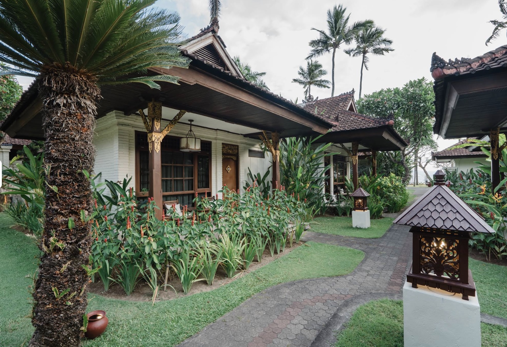

Wir kamen mit dem ersten Flug aus Jakarta in Denpasar an und wussten eigentlich schon, wohin wir wollten. Wir reisten damals immer mit dem Lonely Planet, und darin hatten wir einen Ort an der Südostküste gefunden, der genau nach dem klang, was wir suchten: Candidasa. Beschaulich, direkt am Meer, keine großen Hotels, kein Trubel. Also machten wir uns auf die Suche nach einem Mietwagen.
Das muss man sich allerdings etwas anders vorstellen als bei uns. Wir gelangten in einen Hinterhof, in dem ein Mechaniker mit spärlichem Werkzeug an einem alten Wagen herumschraubte. Rundherum liefen Hühner über die Wiese. Ich meine sogar, dass genau dieses Auto später unseres wurde. Der Mann klopfte hier, drehte dort an einer Schraube, schloss schließlich die Motorhaube und erklärte den Wagen offenbar für fahrbereit. Damit war die Sache erledigt. Wir bekamen den Schlüssel und fuhren los.
Die Straße nach Candidasa war 1987 eher ein besserer asphaltierter Pfad als eine richtige Fernstraße. Trotzdem war sie die Hauptverbindung von Denpasar in den Osten der Insel. Entsprechend spielte sich dort alles ab: Menschen, Fahrräder, Mopeds, Hühner, Hunde und gelegentlich ein Auto. Man wusste nie, was einen hinter der nächsten Kurve erwartete. Dazu kam der Linksverkehr. Unser Mietwagen machte die Sache nicht leichter. Die Achsgelenke waren offenbar völlig ausgeschlagen, und das Auto fuhr nicht immer dorthin, wohin man lenkte. Man musste ständig gegenhalten, damit man nicht irgendwo am Straßenrand landete. Schnell fahren konnte man ohnehin nicht. Mehr als fünfzig oder sechzig Stundenkilometer waren kaum möglich, und so dauerte die Fahrt nach Candidasa mehrere Stunden.
Dort angekommen, brauchten wir zunächst Benzin. Wir fragten nach einer Tankstelle und wurden zu einem Mann am Straßenrand geschickt. Eine Zapfsäule gab es nicht. Vor ihm standen ein paar Kanister und Eimer, und darin befand sich offenbar Benzin. Der Tankwart nahm einen Kanister und schüttete den Inhalt mit einem Trichter in unseren Tank. Damit war auch dieses Problem gelöst.

Unsere Unterkunft hieß damals, glaube ich, Paradise Beach. Ein Resort im heutigen Sinn war es nicht. Es bestand aus einigen einfachen Cottages direkt am Meer. Luxus gab es kaum, aber die Lage war wunderschön. Wir hatten ein kleines Häuschen mit einem Bett und einem Bad. Wobei „Bad“ etwas hoch gegriffen war. Fließendes Wasser gab es nicht. Stattdessen stand dort ein großer gemauerter Wasserbehälter, aus dem man sich mit einer kleinen Schöpfkelle Wasser über den Körper goss. Dieses Bad heißt in Indonesien Mandi. Man stellte sich neben das Becken, seifte sich ein und schöpfte anschließend immer wieder kühles Wasser über sich. Anfangs war das ungewohnt, nach wenigen Tagen fanden wir es herrlich erfrischend. Bei der tropischen Hitze war das Mandi oft der angenehmste Moment des Tages.
Vor dem Cottage lag das Meer, etwa fünfzig Meter weiter draußen ein Korallenriff. Gegessen wurde in einer offenen Bambushütte direkt am Wasser. Brot gab es praktisch nicht. Nach Neuseeland und Neukaledonien war das zunächst eine Umstellung. Morgens Reis, mittags Reis, abends wieder Reis. Dazu Gemüse, Fisch, Huhn und scharfe Soßen. Es schmeckte ausgezeichnet und kostete fast nichts. Eine Flasche Bier war beinahe so teuer wie der Bungalow für eine Nacht, wobei auch der Bungalow unglaublich billig war.
Das Korallenriff sah friedlich aus, hatte aber seine Tücken. Als ich eines Tages hinausschwamm, geriet ich plötzlich in eine starke Strömung. Bei Flut wurde das Wasser über das Riff gedrückt und floss durch eine Öffnung wieder hinaus ins offene Meer. Genau dort war ich hineingeraten. Zunächst versuchte ich, mit aller Kraft dagegen anzuschwimmen. Das funktionierte natürlich nicht. Irgendwann begriff ich, dass ich mich auf diese Weise nur erschöpfen würde. Also legte ich mich auf den Rücken, ließ mich zunächst treiben und paddelte langsam parallel zum Ufer. Nach vielleicht einer Viertelstunde wurde die Strömung schwächer, und irgendwann hatte ich wieder Boden unter den Füßen. Das war mir eine Lehre. Ich erzählte Hilde sofort davon. Als sie später ebenfalls hinausgeschwommen war, geriet sie in eine ähnliche Strömung und machte es genauso: ruhig bleiben, auf den Rücken legen, nicht gegen die Strömung kämpfen. Auch sie kam sicher zurück.
In Candidasa lernten wir nette Menschen kennen, darunter ein Geschwisterpaar aus Würzburg, mit dem wir uns gut verstanden. Nach einigen Tagen fuhren wir weiter ins Landesinnere nach Ubud. Damals war Ubud noch ein Geheimtipp. Es gab einige Künstler, ein paar einfache Unterkünfte und nur wenige Touristen. Mit dem heutigen, überlaufenen Ort hatte das kaum etwas zu tun. Natürlich gab es auch damals schon die Hunde, die einem überall hinterherliefen, aber ansonsten war Ubud ruhig, ursprünglich und angenehm unaufgeregt.
Unser Bungalow lag hinter dem Affenwald mitten in den Reisfeldern. Rundherum erstreckten sich die grünen Reispaddies, und zwischen den Pflanzen liefen Enten herum, die nach Schnecken suchten. Das war wunderschön anzusehen. Zur Begrüßung brachte uns der Boy heißen Tee. Bei der Hitze erschien uns das zunächst etwas widersinnig. Aber tatsächlich war der Tee erstaunlich erfrischend. Man schwitzte kurz und fühlte sich danach besser als nach einem eiskalten Getränk.
Eines Tages fragte uns der Boy, ob wir vielleicht etwas Schönes für ihn hätten. Besonders interessierte ihn meine Jeans. Ich hatte zwei dabei und trug eigentlich immer nur eine davon. Die andere war schon etwas ausgeblichen, aber für ihn offenbar ein begehrenswertes Stück. Er schlug einen Tausch vor. Für die Jeans würde er mir ein Gemälde bringen. Am nächsten Tag kam er mit einem Bild zurück, das eine balinesische Zahnfeilungszeremonie zeigte. Die Jeans wechselte den Besitzer, der Handel war abgeschlossen, und das Bild nahmen wir mit nach Hause.
Unterwegs wurden wir ständig angesprochen, meist von Kindern. Den Unterschied zwischen Mister und Misses kannten sie nicht. Für sie war jeder Tourist „Mister“.
„Hello Mister, you want cold drink?“
So riefen sie Hilde genauso hinterher wie mir. Sie waren freundlich, neugierig und oft einfach nur froh, ein paar Worte Englisch ausprobieren zu können.
Bali hatte eine ganz eigene Atmosphäre. Anders als der größte Teil Indonesiens ist die Insel hinduistisch geprägt. Das war überall zu spüren. An fast jedem Haus, an Kreuzungen und am Wegesrand standen kleine Schreine. Davor lagen kunstvoll geflochtene Opferschälchen mit Reis, Blüten, kleinen Süßigkeiten und Räucherstäbchen. Man musste aufpassen, nicht versehentlich hineinzutreten. Aus den Schälchen stieg feiner Rauch auf. Überall roch es nach Blumen, Weihrauch, feuchter Erde, Reisfeldern und tropischen Pflanzen. Fremd, süß, würzig und wunderbar. Dieser Geruch gehörte zu Bali wie die Tempel, die Reisfelder und das warme Licht am Abend.
Zum Schluss fuhren wir noch nach Sanur. Sanur war schon damals touristischer als Candidasa oder Ubud, aber immer noch vergleichsweise ruhig. Kuta sahen wir uns ebenfalls an. Dort war deutlich mehr los: Bars, Kneipen, Souvenirläden, Kiffer, Aussteiger und allerlei Leute, die schon etwas länger unterwegs waren, als ihnen guttat. Das war nicht unsere Welt. Wir gingen einmal hindurch, sahen uns das Ganze an und zogen uns anschließend wieder nach Sanur zurück.
Auch dort begleiteten uns diese Gerüche. Morgens lagen kleine Opfergaben vor den Häusern und Geschäften. Blütenblätter, Reis, manchmal ein Stück Obst, dazu die glimmenden Räucherstäbchen. Der Rauch zog durch die warme Luft, vermischte sich mit dem Duft der Pflanzen und dem Geruch des Meeres. Es roch fremd und schön, manchmal süßlich, manchmal erdig, aber immer nach Bali. Das ist mir stärker in Erinnerung geblieben als manches Gebäude oder manche Landschaft.
Nach einigen Tagen flogen wir mit Garuda zurück nach Jakarta. Bali war nicht wegen eines einzelnen Erlebnisses so besonders gewesen. Es war die Mischung aus Landschaft, Menschen, Gerüchen, Tempeln, Reisfeldern und dieser stillen Freundlichkeit, die uns vom ersten Tag an gefiel. Für uns war es einer der Höhepunkte der gesamten Reise.